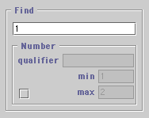
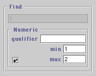
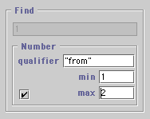
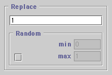
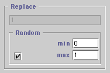

Cutter Help
The Find/Replace Tool
[return to index]
- Contents
- Overview
- Finding Numbers
- Replacing Numbers
Overview
Like any text editor Cutter can find and replace text. The Find/Replace
tool can be used to find entire word or a part of a word. Searching may be
done with or without regard to 'case' ie. the distinction between upper
and lower case can be ignored.
In addition to these standard features, Cutter provides two additional
modes that distinguish between plain and numeric text. For example, the
Find panel shown below will search for instances of the character "1"
ie. plain text mode,

With the whole word option inactive ie.
eight instances (shown in red) of the character "1" would be found in
the following sample text,
Color 1.0 0.1 1
LightSource "pointlight" 1 "from" [1 1 1.01]
With the whole word option active ie.
the following instances of the the character "1" would be found in the sample text.
Color 1.0 0.1 1
LightSource "pointlight" 1 "from" [1 1 1.01]
Finding Numbers
When the checkbox in the Find-Number panel is selected a document may
be searched for either a specific number or a number within a range
from min to max.
The search for a fixed or varying number can also be constrained so
that only numeric values associated with a qualifying word will be
searched.
Two examples of "numeric" searching are shown below. The find panel on
the left will search for all numbers larger or equal to 1 AND smaller
or equal to 2. The find panel on the right uses a qualifing word to
make its search more restrictive.
 
The first search, if repeated several times using Find Next, would
locate the six instances of numeric values that satisfy the search
criteria,
Color 1.0 0.1 1
LightSource "pointlight" 1 "from" [1 1 1.01]
The second search, however, would only find three instances,
Color 1 1 1
LightSource "pointlight" 1 "from" [1 1 1.01]
Replacing Numbers
As shown below the Replace panel can also be used to replace text in
two ways.
 
Using the "plain" text input field shown on the left any text can
entered and used as a replacement - no different to any other
text editor. The screen shot on the right, however, shows how Cutter
can randomize the replacement numeric values.
For example, using the previous setup for Find and choosing
Replace All we get the following substitutions,
Color 1 1 1
LightSource "pointlight" 1 "from" [0.730 0.410 0.207]
Notice in the Find/Replace Tool there is a checkbox title Repeat Random.
When this option is selected Cutter resets its random number generator back to the
beginning of the (pseudo) random sequence - you will get the same sequence
of random numbers.
Alternatively, if the checkbox is un-selected each
use of Replace All will generate a unique sequence of random
numbers. For example, performing a random replacement on the same
text four times yielded these values.
LightSource "pointlight" 1 "from" [0.332 0.967 0.006]
LightSource "pointlight" 1 "from" [0.963 0.939 0.947]
LightSource "pointlight" 1 "from" [0.937 0.397 0.347]
In the context of say an animation RIB file of the type produced
by Cutter ie. many frames within a singe file, a possible use
of this randomizing facility might be to "jitter" the intensity
of a light source to give the illusion the light is originating
from a candle or some other flickering flame.
Subtle randomization could also be used to "chop up" the values
of the camera transformations - to give a more "hand held camera"
feel to an animation!
|